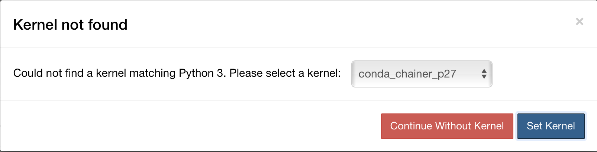
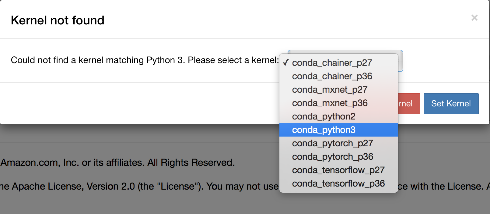
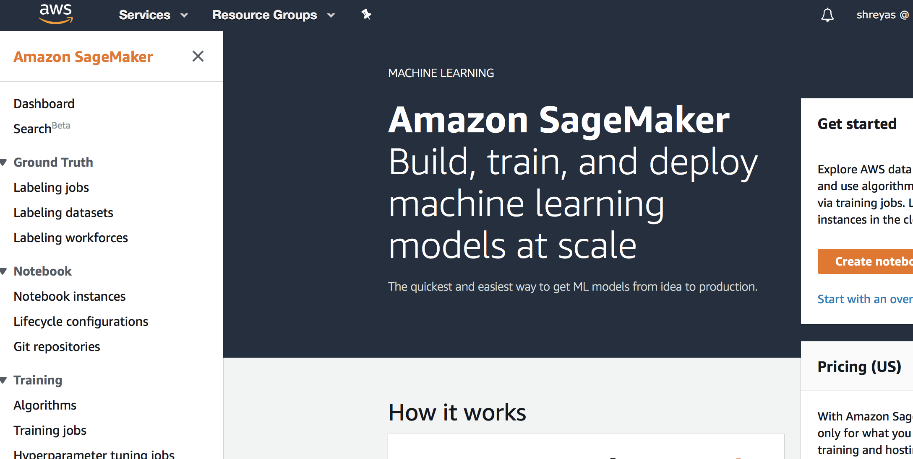
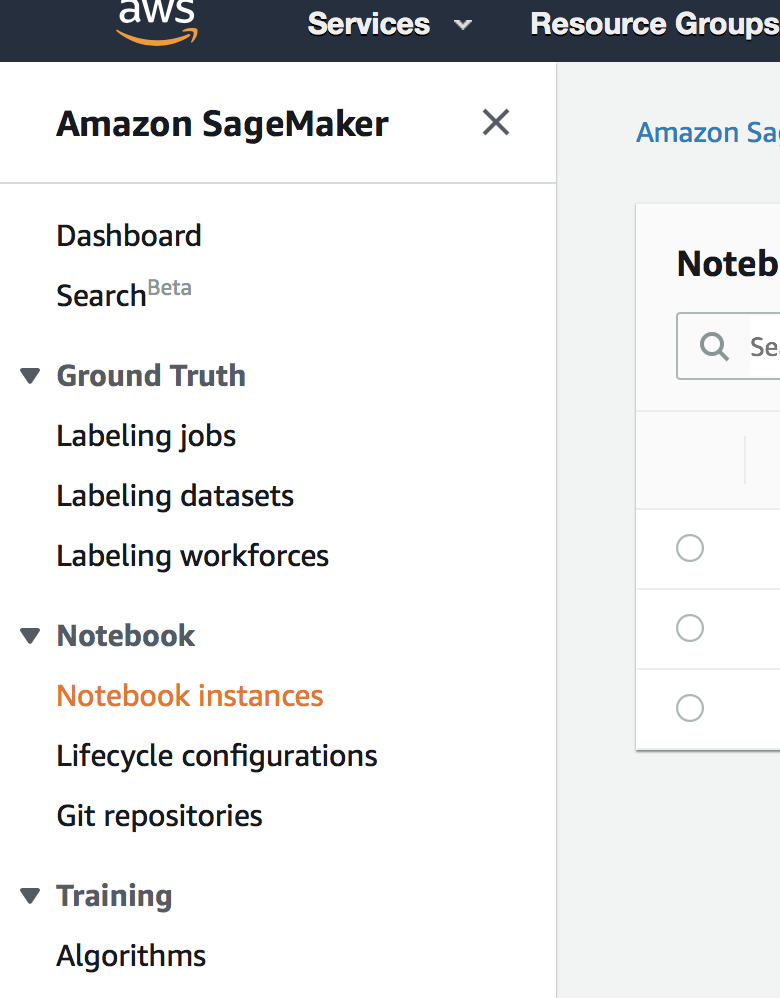
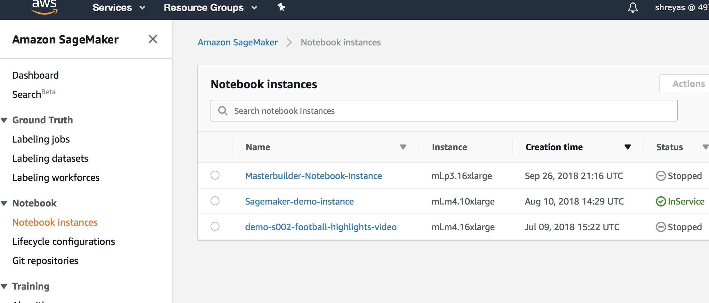
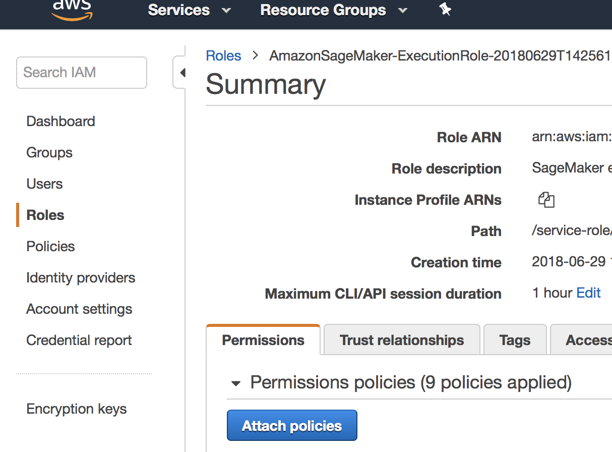
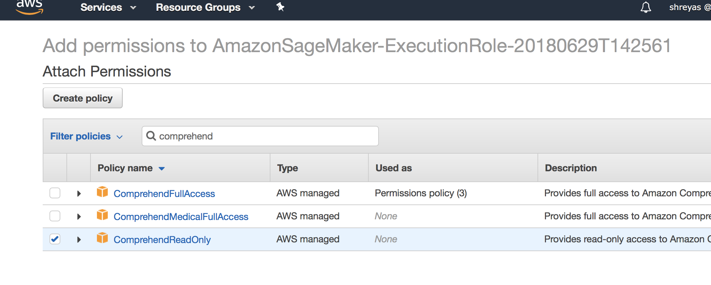

Lab 7: Comprehend Sentiment Analysis
Using Comprehend APIs from a Sagemaker notebook
Step 1
Setup
In this next lab, we’ll use Amazon Comprehend to analyze an Amazon Reviews dataset. We’ll be using the following product review dataset from Stanford - http://snap.stanford.edu/data/amazon/productGraph/categoryFiles/reviews_Amazon_Instant_Video_5.json.gz. We will not be training a model here, but simply using comprehend API calls to get the sentiment for product reviews in the dataset.Step 2
Use the following steps to clone the following file in your already created notebook instance:
- Go to Jupyter
- New > Terminal
wget https://raw.githubusercontent.com/w601sxs/aws-ai-bootcamp-labs/master/Notebooks/Comprehend_Demo.ipynb -P SageMaker/
- Go to jupyter and open the newly downloaded ipynb notebook file by clicking "Comprehend_Demo.ipynb"
Step 3
When you open the Jupyter notebook, you may see the following error:

Use the drop down to select the kernel

Use the drop down to select the kernel
conda_python3 as shown below:Step 4
Modify Sagemaker IAM role:
- Go to the AWS SageMaker console
 - Click Notebook Instances on the left sidebar menu (if the menu is collapsed, click the hamburger menu icon on the top left to open the sidebar, and then click notebook instances)
 - Click the link that corresponds to the notebook instance that is "In Service" (the notebook instance that you created in lab 1)
 - Under IAM role, click the link that looks like
https://us-east-1.console.aws.amazon.com/iam/home#/roles/AmazonSageMaker-ExecutionRole-90128301823. This opens up a new window or tab with this IAM role. - Click the "Attach policies" button
 - Type in "comprehend" in the filter search box, and select the checkbox next to "ComprehendReadOnly". Then click the "Attach Policy" button in the bottom right corner.
 - Go back to the Comprehend Sagemaker notebook (If you don't have it opened, or you closed that browser tab, Go to the AWS console > Search for "Sagemaker" and click SageMaker > Click "Notebook Instances" on the left sidebar > Click "Open Jupyter" > Click the "Comprehend_demo.ipynb" to reopen the notebook)